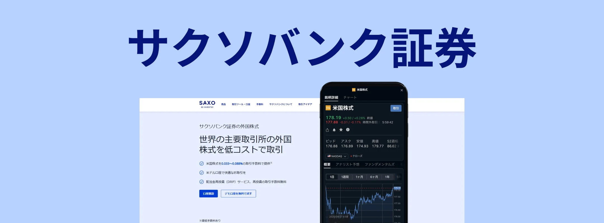

Web Design and Digital Experience at Saxo Bank Japan
Selected work improving website usability, product communication and digital campaign experiences for Japanese retail investors.
※This portfolio is an independent presentation of my work and does not represent official Saxo Bank communications or investment advice.
- Tools
- Figma, Adobe Creative Cloud, Web analytics
- Field
- UX/UI Design, Web Design, Digital Experience
- Stakeholder
- Saxo Bank Securities Ltd. (Japan)

Overview & role
My work spans website design, UX improvements and digital marketing production. I work across local requirements and global brand and platform standards, collaborating with marketing, product, compliance, developers and external partners.
This page brings together selected contributions to public-facing digital experiences. The examples focus on design decisions and working methods; detailed internal processes and business data are intentionally excluded.
UX & optimisation
Behavioural insights, conversion optimization and engagement
Digital experiences
Campaign landing pages, product launches and localisation
Visual communication
Consistent design across web and marketing channels, following global CVI with a Japanese touch
Website UX & optimisation
Financial products can be difficult to compare and understand. Visitors need clear navigation and an information hierarchy that helps them find relevant products and next steps without unnecessary friction.
I use web analytics and behavioural data to identify opportunities in page structure, product discoverability and the visibility of relevant and engaging content. I contribute to design and content changes suited to Japanese users while working within existing brand and compliance requirements.
Digital experiences
For all campaign, product and service launches I work on landing-page structure, visual communication and the relationship between campaign messaging and on-site journeys. This requires turning complex product information into a clear hierarchy and messaging coordinated across functions.
Visual design
Alongside website UX work, I design campaign assets and digital communications for multiple marketing channels. My focus is on maintaining a coherent visual identity while adapting formats, content and hierarchy to each placement.
Brand consistency
Create a recognisable visual system across touchpoints, aligned with global CVI
Local relevance
Adapt language, content and design style for Japanese market
Compliance
Adhere to strict financial regulations and protect brand image
Impact & reflection
These projects strengthened my ability to connect user needs with business objectives in a highly regulated environment. The work required consideration of usability, brand consistency, technical constraints and compliance throughout delivery.
My main takeaway is that effective UX improvements are often practical and incremental: making information easier to find, reducing uncertainty and improving the clarity of an existing journey. The FinTech industry moves quickly, requiring agile Design Thinking.
Evidence and outcomes: Specific internal metrics and analytics are not included here. In an interview, I can discuss my approach, responsibilities and publicly shareable examples in greater depth.